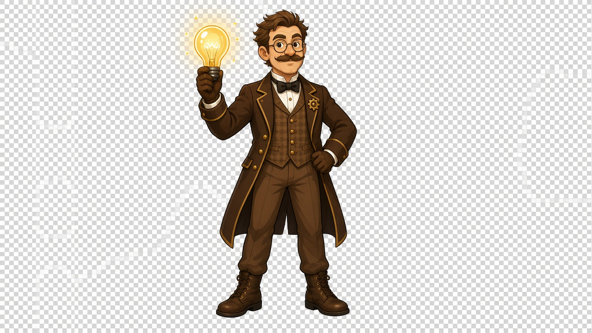

Salta al contenuto
Guerra delle correnti
Home
Fumetto
Storia
Chiaro
Prologo
Il progresso resta su questo dispositivo.
Ricomincia
Suono: acceso
Dopo il film

Prof.
Tecnologie elettriche
Storia completata
Chiudi
Ricomincia
Vai al fumetto
Realizzato dal Prof. Rossano Bella.